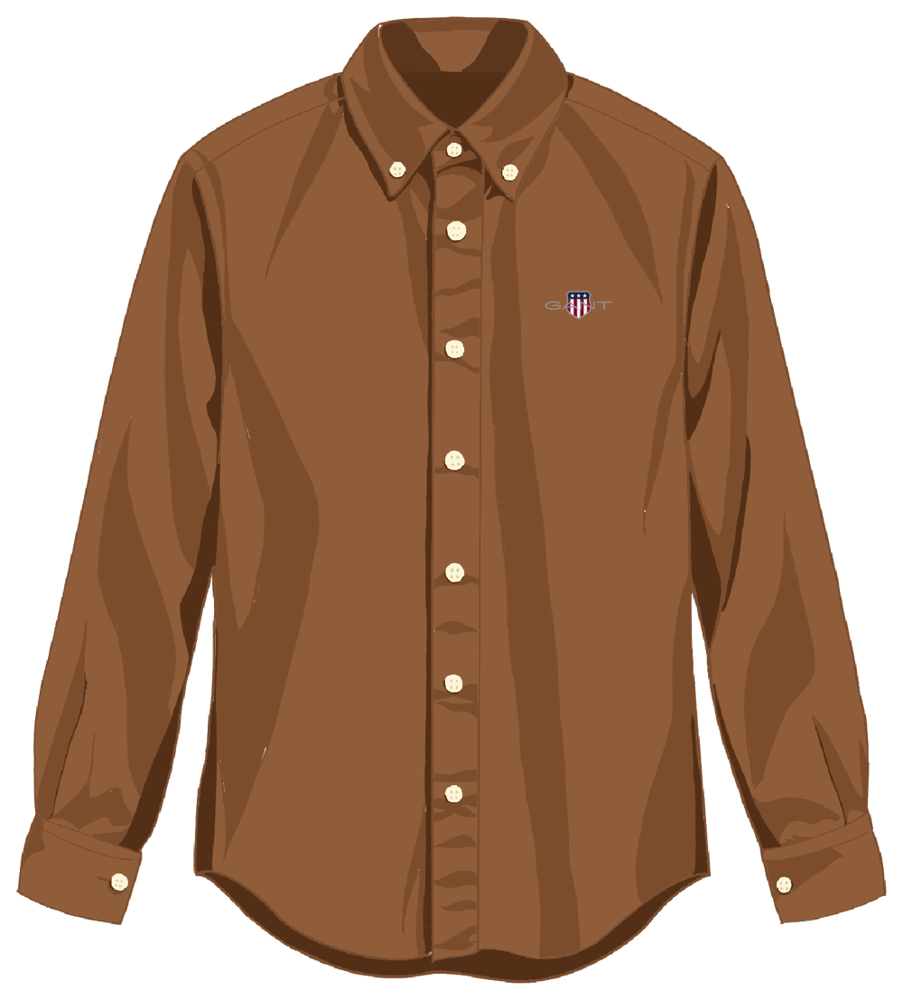

THEN · NEW HAVEN
1949
A shirtmaking story begins.
A practical shirt finds its place in a changing everyday wardrobe. Its useful details become a quiet signature.

THEN.04 / Then & now
THEN · NEW HAVEN
A practical shirt finds its place in a changing everyday wardrobe. Its useful details become a quiet signature.

THEN.NOW · TODAY
The details remain familiar. The Oxford shirt keeps moving with the people who wear it.
 NOW.
NOW.The Oxford shirt, seen across time: a silhouette shaped by its details, and reinterpreted by each new day.